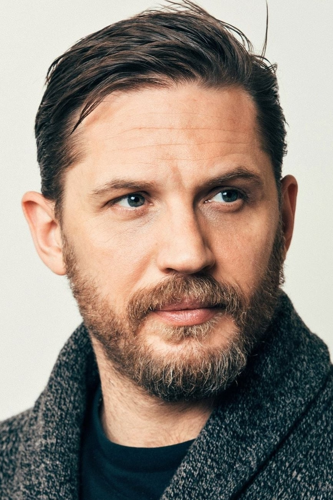

Том Гарді
Едвард Томас Гарді — британський актор театру та кіно (нар. 15 вересня 1977, Гаммерсміт, Лондон, Велика Британія), відомий за головною роллю у фільмах:
x2 log10
- «Бронсон» (2009)
- «Початок» (2010)
- «Воїн» (2011)
- «Темний лицар повертається» (2012)
- «Шалений Макс: Дорога гніву» (2015)
- «Легенда Г'ю Гласса» (2015)
Діяльність:
- модель
- актор
- кіноактор
- телеактор
- акторсценарист
- актор театру
- виконавчий продюсер
